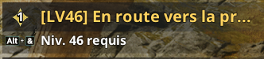
Quêtes principales
Toutes, intégralement.
Aion 2 · Guide de progression
Tout faire pour passer 1400 de GS avant d'utiliser ses Odyles, coûte que coûte.
À faire intégralement.

Toutes, intégralement.
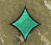
Toutes les quêtes vertes : elles donnent les Skill points.
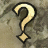
TOUS finis → Daevanions + Skill points.
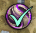
Monter le Monolith au niveau 30, puis arrêter.
Amulette
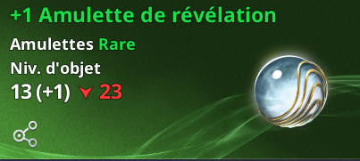
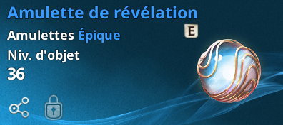
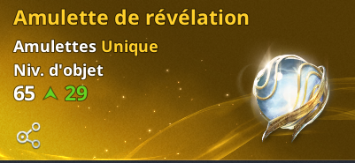
Ceinture
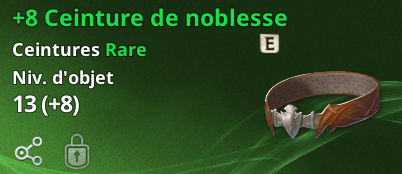
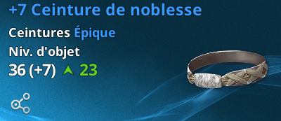
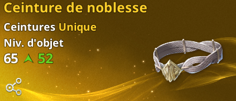
Monter la pièce verte à +10 pour la passer en bleue, puis la bleue à +10 pour la passer en jaune (Gold).
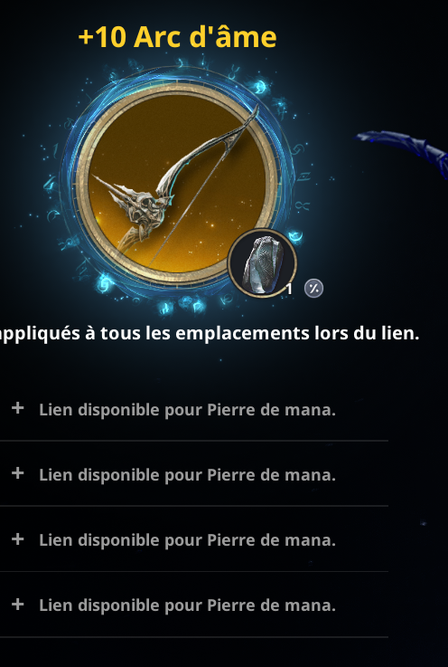
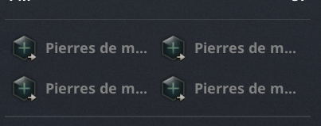
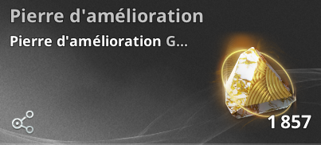
2h · 5h · 8h · 11h (am & pm)
À faire.
Progression lente, GS gratuit via les Daevanions.
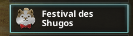
À faire en masse → achat de Daevanions.
Stage 1, puis 2, puis… → achat de Daevanions.
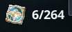
Le compteur (ex. 6/264). Chaque Daevanion = du GS gratuit.
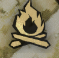
On dodge, aucun intérêt.
Inutiles au-delà du Monolith 30 (pour l'instant).
Très compliqué (campé par des rangers), pas rentable.